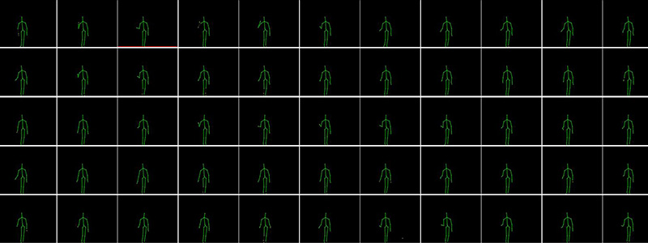

<section class="section" id="process">
  <div class="container">
    <div class="row justify-content-center">
      <div class="col-md-8 col-lg-6 text-center">
        <div class="section-heading">
          <!-- Heading -->
          <h2 class="section-title">How do I use it?</h2>

          <!-- Subheading -->
          <p>
            NITAGMA is flexible – use your files. It’s respectful of the way you
            work.
          </p>
        </div>
      </div>
    </div>
    <!-- / .row -->

    <div class="row justify-content-center">
      <div class="col-lg-4 col-sm-6 col-md-6">
        <div class="process-block">
          

          <h3>Data Acquisition (Skeleton Joint Information)</h3>
          <p>
            Use Video Recording or live capture to Gather data your Skeleton
            Joint
          </p>
        </div>
      </div>
      <div class="col-lg-4 col-sm-6 col-md-6">
        <div class="process-block">
          

          <h3>Data Preprocessing</h3>
          <p>
            Gather and group your Skeleton Joint into classes, or categories,
            that you want the computer to learn.
          </p>
        </div>
      </div>
      <div class="col-lg-4 col-sm-6 col-md-6">
        <div class="process-block">
          

          <h3>Input Data through our UI</h3>
          <p>Predict the General Movements’ Assessment</p>
        </div>
      </div>
    </div>
    <div class="row justify-content-center mt-3">
      <button
        routerLink="/new-project"
        type="button"
        class="btn btn-warning p-4"
      >
        Create New Project
      </button>
    </div>
  </div>
</section>
